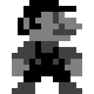
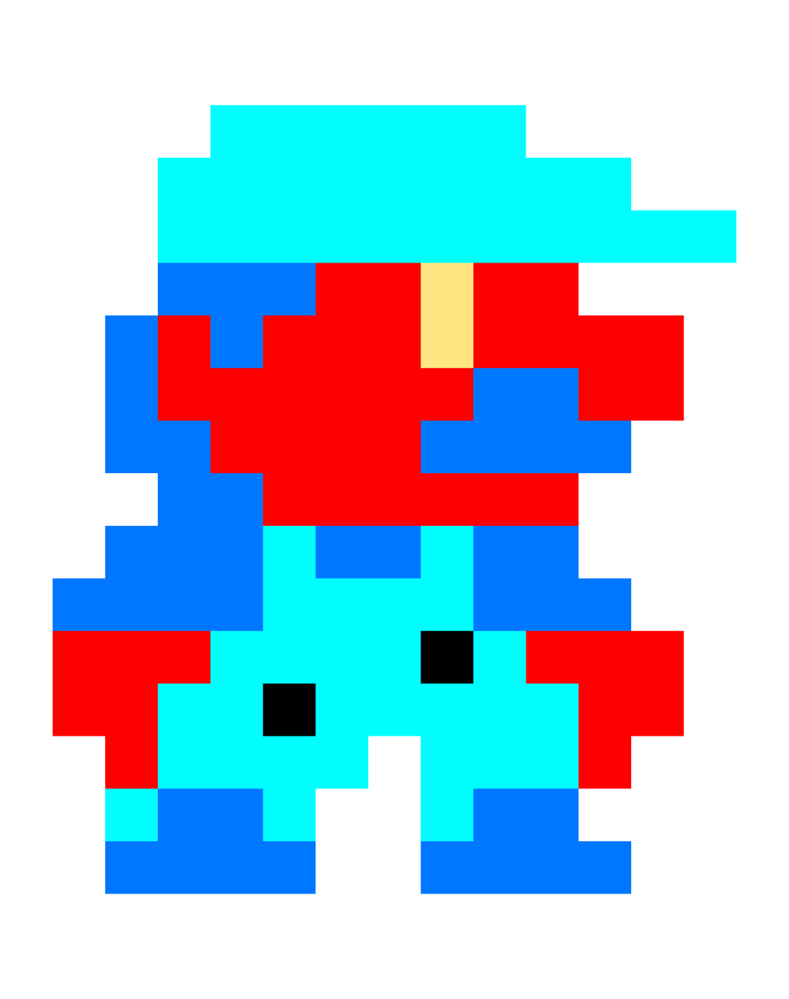
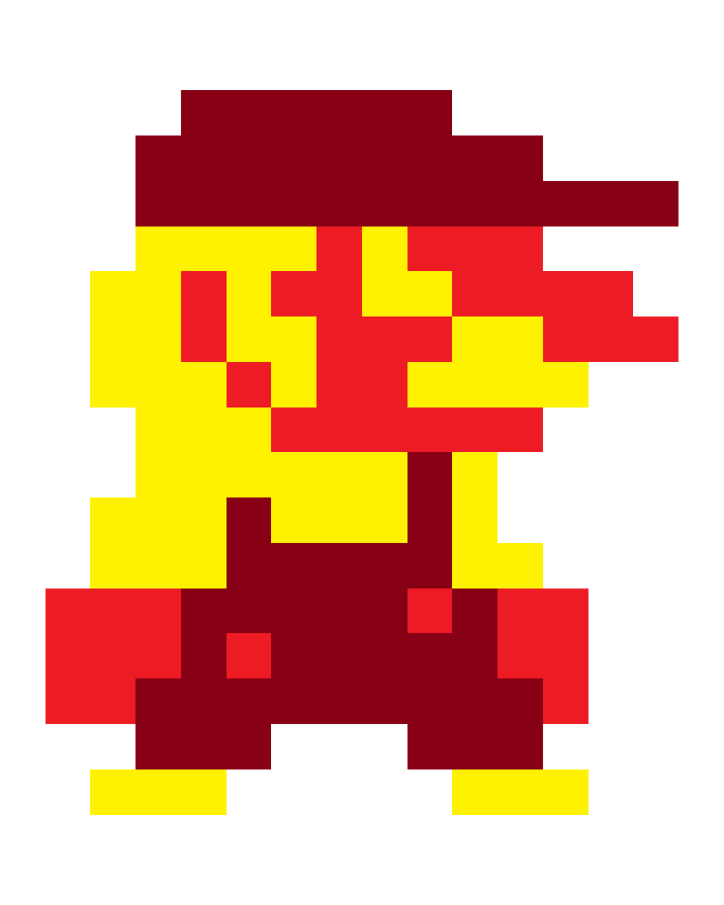
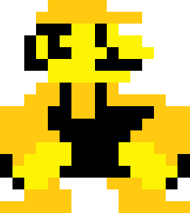

Nossos Profissionais
EVIL MARIO ONLINE
Função: Cirurgião Geral
Responsável pela realização de procedimentos cirúrgicos teciduais e viscerais com alta precisão técnica.

Evil Lava Squirter
Função: Anestesiologista
Especialista no controle da dor e na monitoração dos parâmetros vitais durante cirurgias e exames complexos.

Ultra Irios
Função: Imaginologista
Atua no diagnóstico por imagem, operando ultrassonografia e radiografia para laudos precisos.
Golden Rorys
Função: Dermatologista
Dedicado ao diagnóstico e tratamento de alergias, infecções de pele e otites nos animais.
Professor Premiere
Função: Cardiologista
Cuida da saúde cardiovascular pet, realizando eletrocardiogramas e acompanhamento de cardiopatias.

Shoe Bench
Função: Oncologista
Especialista no tratamento de neoplasias, oferecendo protocolos quimioterápicos e suporte integral.

Tonys
Função: Ortopedista
Trata fraturas, luxações e afecções articulares, devolvendo a mobilidade aos pacientes.
Urio
Função: Medicina de Felinos
Focado nas particularidades fisiológicas e comportamentais dos gatos para um atendimento Cat Friendly.
Film Freak
Função: Fisioterapeuta
Aplica técnicas de reabilitação física, cinesioterapia e hidroterapia para acelerar a recuperação pós-operatória.